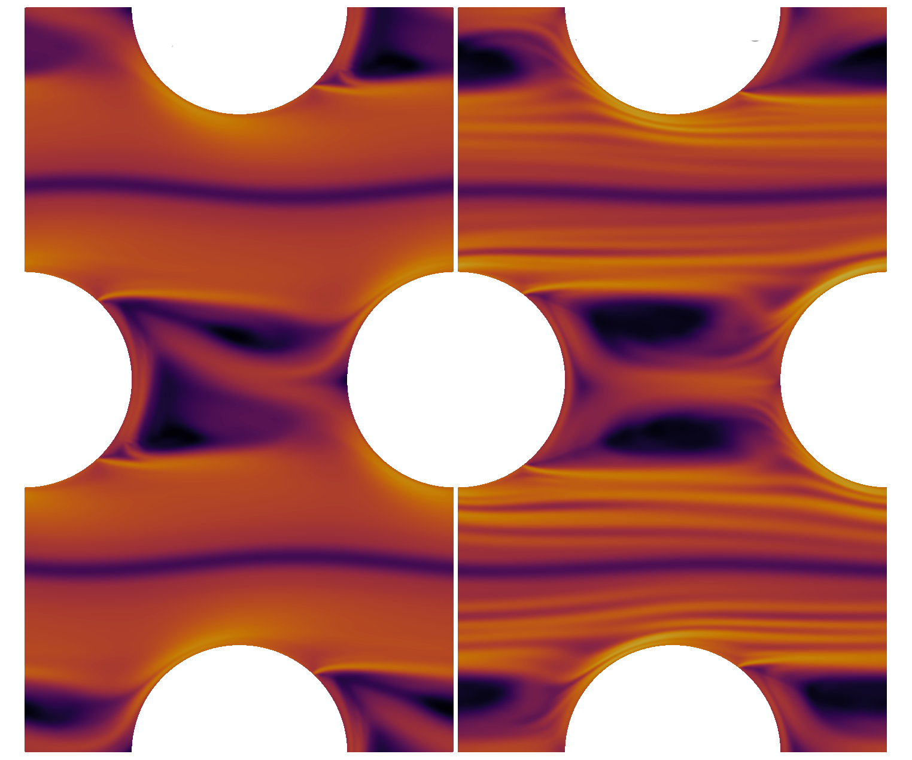
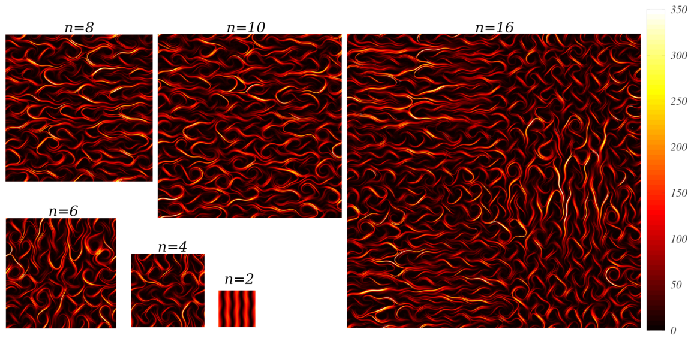

Research
Broadly, my research involves developing new numerical methods to simulate fluid dynamics problems, and using these methods to obtain new insights into fundamental physical behaviours. I have a particular focus on complex fluid problems which are challenging for conventional methods and often require highly accurate or adaptive numerical schemes.High-order meshless methods
 The Local Anisotropic Basis Function Method (LABFM) (King, Lind & Nasar (2020) and King & Lind (2022)) is a mesh-free method which allows arbitrarily high-order (e.g. 10th) discretisations on an unstructured node set. It combines the geometric flexibility of other mesh-free methods (such as SPH, see below), with high-order finite differences. We have implementations of LABFM for a range of different flow types, including turbulent reacting flows and viscoelastic flows.
The Local Anisotropic Basis Function Method (LABFM) (King, Lind & Nasar (2020) and King & Lind (2022)) is a mesh-free method which allows arbitrarily high-order (e.g. 10th) discretisations on an unstructured node set. It combines the geometric flexibility of other mesh-free methods (such as SPH, see below), with high-order finite differences. We have implementations of LABFM for a range of different flow types, including turbulent reacting flows and viscoelastic flows.

Combustion in complex geometries
Using LABFM as the basis of a direct numerical simulation framework for simulations of turbulent combustion in complex geometries (King (2024)). For example, the image below shows contours of heat release rate for during the ignition of hydrogen in a porous geometry.
Viscoelastic flow simulation and elastic instabilities

Starting with our work on smoothed particle hydrodynamics (King & Lind (2021)) we have developed several mesh-free solvers for viscoelastic flows, including LABFM-based (King & Lind (2024)), with options for EVSS, log-conformation and Cholesky decomposition formulations. We are now using these numerical methods to study fundamental elastic instabilities and symmetry breaking flows in porous geometries - see King, Broadley & Beneitez (2026).Smoothed Particle Hydrodynamics for bubbly waves
 This project involved the development of a multiphase Smoothed Particle Hydrodynamics framework to simulate air-bubble entrainment in breaking waves. Using a simple mechanistic model to relate turbulent dissipation rate to bubble entrainement, we are able to accurately reproduce the bubble size distribution under a breaking wave, in a simulation which has a remarkably low computational cost. More details in this JFM article King et al. (2023).
This project involved the development of a multiphase Smoothed Particle Hydrodynamics framework to simulate air-bubble entrainment in breaking waves. Using a simple mechanistic model to relate turbulent dissipation rate to bubble entrainement, we are able to accurately reproduce the bubble size distribution under a breaking wave, in a simulation which has a remarkably low computational cost. More details in this JFM article King et al. (2023).

Uncertainty in Elastic Turbulence

Elastic turbulence can lead to increased flow resistance, mixing and heat transfer. We investigated the dynamics of uncertainty in elastic turbulence, deriving equations for the evolution of uncertainty measures, and yielding insight on uncertainty growth mechanisms. We identified four regimes of uncertainty evolution, which are are governed by the interplay between advective and polymeric contributions (which tend to increase uncertainty), viscous, relaxation and dissipation effects (which reduce uncertainty) and inertial contributions. More details in this JFM article King et al. (2025).The Kaye effect
 Sometimes when a jet of shampoo is poured from a bottle it appears to leap on landing. This phenomenon, called the Kaye effect had baffled rheologists for half a century. One theory proposed that the jet slipped on a thin layer due to the shear-thinning nature of the liquid. Another theory involed the jet slipping on a very thin air layer. We performed experiments in a vacuum chamber (King & Lind (2019)), showing that air is a key ingredient for the effect, confirming the air layer theory. We also developed a simple mechanistic model which explained why the effect occurs in some fluids and not others, showing that elasticity is crucial, whilst shear thinning plays only a small role.
Sometimes when a jet of shampoo is poured from a bottle it appears to leap on landing. This phenomenon, called the Kaye effect had baffled rheologists for half a century. One theory proposed that the jet slipped on a thin layer due to the shear-thinning nature of the liquid. Another theory involed the jet slipping on a very thin air layer. We performed experiments in a vacuum chamber (King & Lind (2019)), showing that air is a key ingredient for the effect, confirming the air layer theory. We also developed a simple mechanistic model which explained why the effect occurs in some fluids and not others, showing that elasticity is crucial, whilst shear thinning plays only a small role.
HOME